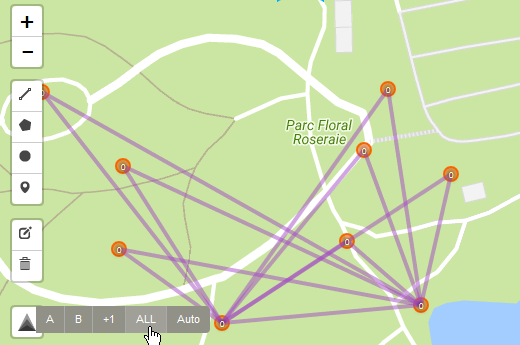

Sélectionner le premier portail et cliquer sur "A"

Sélectionner le second portail et cliquer sur "B"

Sélectionner un autre portail et cliquer sur "+1"

Continuer votre plan en sélectionnant d'autres portails et en cliquant sur "+1"

Cliquer sur "Auto" pour activer/désactiver l'ajout automatique au plan à la sélection d'un portail

Cliquer sur "ALL" pour ajouter tous les portails visibles au plan.
Vous pourrez ensuite supprimer les portails non souhaité avec l'outil "Corbeille".
